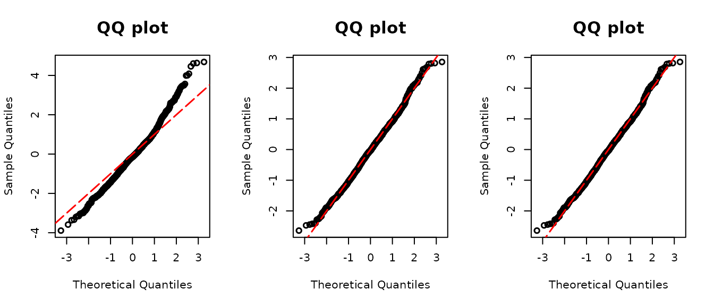

assessor
The goal of assessor is to provide assessment tools for regression models with discrete and semicontinuous outcomes proposed in Yang (2023). It calculates the double probability integral transform (DPIT) residuals, constructs QQ plots of residuals and the ordered curve for assessing mean structures.
General function arguments
In assessor, there are functions for assessing DPIT
residuals for the various type of models: discrete, zero-inflated, and
semi-continuous outcome regression models. resid_disc(),
resid_zeroinfl(), resid_semiconti() and
resid_2pm() are functions evaluating DPIT residuals. They
share the same arguments:
model: Each function supports different types of model objects. Check below which model objects are applicable.plot:If you setplot=T, a function will return QQ-plot drawn with DPIT residuals, or vice versa. Some users may only need the QQ-plot. In that case,qqresid()only returns the QQ-plot without returning the DPIT residuals.scale: You can choose the scale of the residuals amongnormalanduniformscales. The sample quantiles of the residuals are plotted against the theoretical quantiles of a standard normal distribution under the normal scale, and against the theoretical quantiles of a uniform (0,1) distribution under the uniform scale. The default scale isnormal
Real data example
The solder data, extracted from the faraway
package, lends itself to fitting through either Poisson regression or
Negative Binomial regression. The selection between these models depends
on the underlying distribution characteristics of the data. To validate
the distribution assumption, a comprehensive approach involves assessing
the DPIT residuals and scrutinizing the QQ plot derived from these
residuals.
library(assessor)
library(faraway)
library(MASS)
data("solder") # from faraway package
## Negative Binomial
modpnb <- glm.nb(skips~.,data=solder)
modp <- glm(skips~.,famil=poisson(link="log"),data=solder)
## QQ-plot
par(mfrow=c(1,3))
poi.resid <- resid_disc(modp,plot = T)
norm.resid <- resid_disc(modpnb,plot = T, scale = "normal")
unif.resid <- resid_disc(modpnb,plot = T, scale = "uniform")
The figure above depicts three versions of QQ plots. The second and
third plots essentially represent the same graph, corresponding to the
QQ plot for Negative Binomial regression (modpnb). Both
plots align closely along the diagonal line, suggesting that the
assumption of Negative Binomial distribution appears appropriate. The
only distinction between them lies in the scale parameter;
the middle panel displays the plot in normal scale, with the \(x\) and \(y\) axes spanning values larger than 1,
while the right panel limits the axes to a range of 0 to 1.
Conversely, the left panel corresponds to the QQ plot from Poisson
regression (modp). In this plot, a slight deviation from
the diagonal line is observed. Consequently, we can infer that the
outcome variable, skips, is more likely to follow a
Negative Binomial distribution rather than a Poisson distribution. This
inference is drawn based on the examination of QQ plots generated by
DPIT residuals, highlighting the suitability of the Negative Binomial
model for capturing the distributional characteristics of the data.